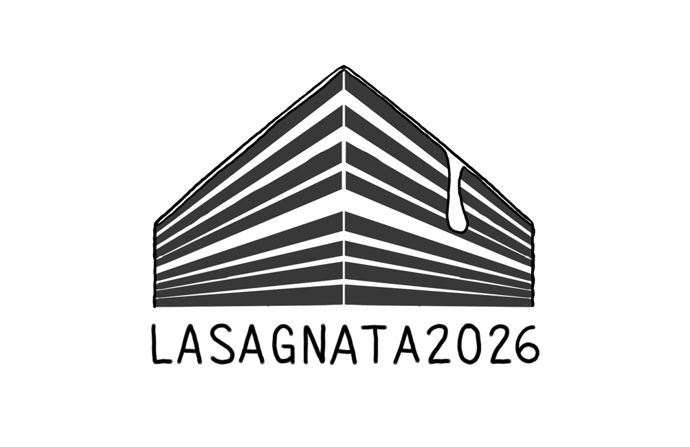
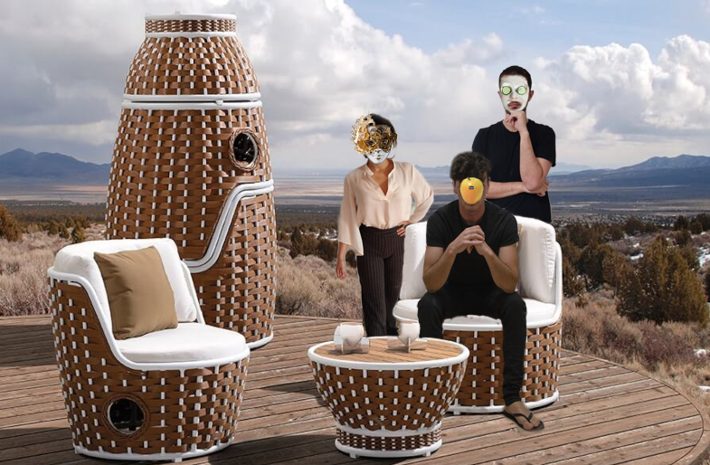

"Il vostro futuro non è scritto, il futuro di nessuno è scritto, il futuro è come ve lo creerete voi perciò createvelo buono!"
All'inizio il nulla. Poi lasagne.
Fin dall'alba dei tempi, la Lasagna è stata il motore che ha spinto l'evoluzione umana. Popoli e civiltà sono stati costruiti e distrutti attorno ad un piatto di Lasagna. La Lasagna è stata la scintilla che ha acceso il fuoco della conoscenza, la fiamma che ha illuminato le menti più brillanti della storia, il carburante che ha spinto l'umanità verso il progresso.
Se stai leggendo questa pagina, vuol dire che quest'anno anche tu potrai prendere parte ad una delle tradizioni più antiche, rispettata religiosamente fin dal lontano 2018, che rende l'uomo ciò che è.
La LASAGNATA™ ha assunto negli anni una presenza a livello mondiale, con delle edizioni passate tenutesi in luoghi come i Paesi Bassi e persino l'Italia.
Come la tradizione vuole, la data della LASAGNATA™ viene determinata secondo le regole incise nella Stele di Rosette, tramandate di generazione in generazione, e qui di seguito riportate:

La LASAGNATA™ è organizzata dal Comitato Segreto della Lasagna (CSdL), che, per preservare la propria incolumità, mantiene l'anonimato dei suoi membri. Da sinistra a destra: Clearmoon, Cooking Master e F4bul0us4.
La presenza della Lasagna in tutte le linee temporali fa sì che la LASAGNATE™ sia luogo di incontro di diverse culture da diverse epoche. Non importa in che anno tu sia, sicuramente la Lasagna sarà presente come simbolo e status di ciò che rappresenta, e nel momento in cui ti siedi a tavola davanti ad un piatto fumante, automaticamente entri a far parte di questa grande tradizione.
La LASAGNATA™ funge quindi da catalizzatore delle diverse linee temporali. Il giorno del 6 Dicembre 2025, sarà in realtà il 6 Dicembre di ogni anno, in ogni epoca, in ogni linea temporale.
A tutti i partecipanti è richiesto di presentarsi con l'abbigliamento (o un elemento di esso) tipico dell'anno o dell'epoca che più li rappresenta.
A chi non dovesse rispettare il dress code verrà consegnata solo una fetta minuscola di Lasagna.
Originariamente la ricetta della Lasagna era tramandata oralmente, ma con la necessità di preservarne la sacralità, venne deciso di trascriverla in un documento ufficiale, denominato "La Ricetta", che venne poi inciso nella Stele di Rosette.
Un team composto dal Cooking Master (CM) ruota-munito ed altri sottopagati schiavi si occuperà di reperire la lista degli ingredienti secondo la Stele di Rosette.
Con l'avvento delle macchine, la produzione di Lasagna è stata rivoluzionata. Questo ha permesso di aumentare la quantità prodotta, mantenendo al contempo un elevato standard qualitativo.
Il CM e gli operai a cottimo si occuperanno di preparare il prodotto secondo La Ricetta. (Pause non pagate, ovviamente.)
Con l'avvento di internet, la Lasagna ha raggiunto ogni angolo del mondo, diventando un simbolo universale di condivisione e convivialità. Grazie al contributo degli influencer disposti a tutto pur di avere un like, la Lasagna è documentata sui social prima di essere servita.
Si pubblichi il post, che la cena abbia inizio.
Per garantire l’elevato livello dell’evento, una quota partecipativa è chiesta agli invitati. Tale quota consiste in una cifra a discrezione dell’invitato (consigliata intorno ai 10 euro a persona). Si consiglia un’offerta proporzionata all’abbondanza di cibo che ci si aspetta di trovare. Tutti i ricavati verranno investiti durante la precedente descritta fase di invenzione della scrittura. Nel caso parte dei fondi dovesse rimanere inutilizzata, è possibile riaverne indietro una frazione proporzionale a quanto versato, oppure lasciarla come cassa comune per l’organizzazione dell’evento del prossimo anno.
{kind=link}